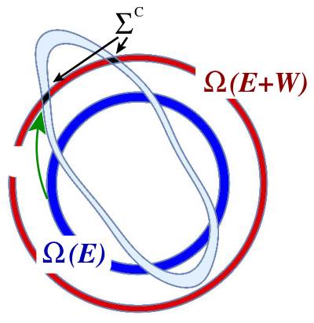
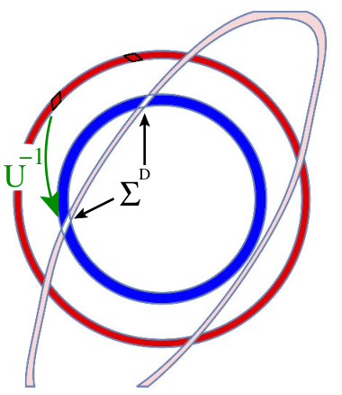
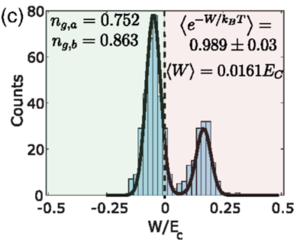
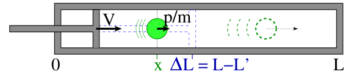
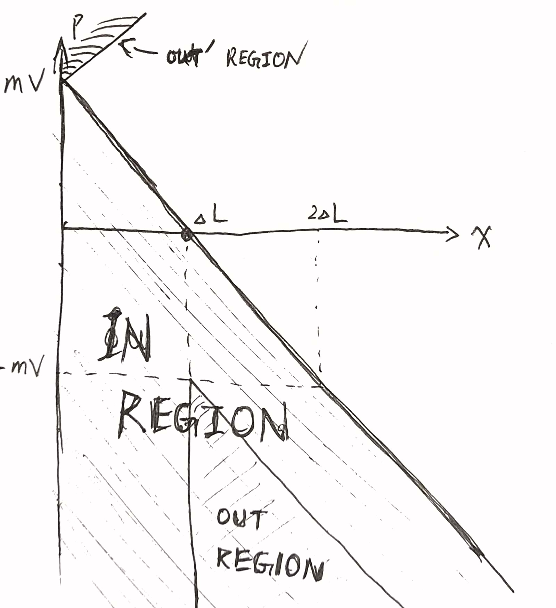
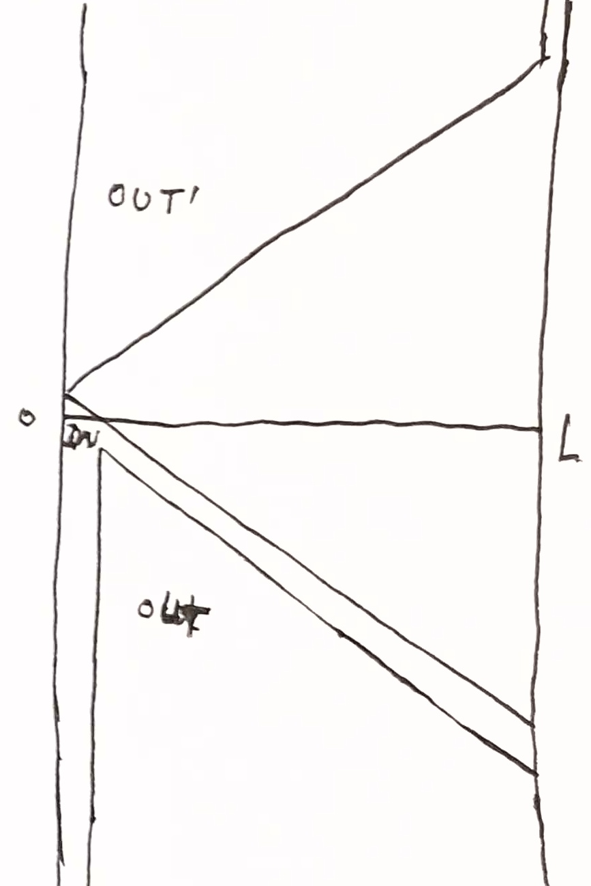

Introduction
Quick reference
- Liouville’s theorem: Hamiltonian dynamics preserves density in phase space.
Max-ent statistical mechanics
The idea of Gibbsian statistical mechanics is to study the evolution of an entire probability distribution over all possible states.
SETUP.
We have a state space \(X\), which by default is the phase space.
We study probability distributions (ensembles) over the state space.
The entropy of a probability distribution \(\rho\) is \[S[\rho] := -\int dx\; \rho(x) \ln \rho(x)\]
Proposition 1 (compound entropy) \(S_{X,Y} = S_Y + \braket{S_{X|y}}_y\)
Proof. Consider a compound system in ensemble \(\rho(x, y)\). Its entropy is \[S[\rho] = -\int dxdy \; \rho(x, y) \ln \rho(x, y)\]
We can take the calculation in two steps: \[S[\rho] = -\int dxdy \; \rho(x|y)\rho(y) (\ln \rho(x|y) + \ln \rho(y)) = S[\rho_Y] + \mathbb{E}_y[S[\rho_{X|y}]]\]
Here, \[S[\rho_Y] = -\int dy \; \rho(y) \ln \rho(y)\]
is the entropy of system \(Y\),
\[S[\rho_{X | y}] = -\int dx \; \rho(x|y) \ln \rho(x|y)\]
is the entropy of system \(X\) conditional on the state of system \(Y\) being equal to \(y\), and
\[\mathbb{E}_y\]
means taking expectation over the state of system \(Y\).
More succinctly, \(S_{X,Y} = S_Y + \braket{S_{X|y}}_y\).
ASSM. (maximum entropy distribution under constraint)
In most systems, everything measurable can be found by studying it as if it has the maximum entropy distribution under constraint.
Differential entropy depends on coordinates choice
Consider the uniform distribution on \([0, 1]\). It is the maxent distribution on \([0, 1]\)… relative to the Lebesgue measure.
Suppose we now stretch the \([0, 1]\) interval nonlinearly, by \(f(x) = x^2\), then the maxent distribution relative to that would no longer be the uniform distribution on \([0, 1]\). Instead, it would be the uniform distribution after stretching.
The problem is essentially this: if we change the coordinates, we change the base measure, and the differential entropy changes.
To fix this, we can use the KL-divergence, which is invariant under a change of base measure, as in \[-D_{KL}(\rho \| \mu) := - \int dx\; \rho(x) \ln\frac{\rho(x)}{\mu(x)}\]
In typical situations, we don’t need to worry ourselves with KL-divergence, as we just pick the uniform distribution \(\mu\). When the state space is infinite in volume, the uniform distribution is not a probability measure, but it will work. Bayesians say that it is an improper prior.
In this interpretation, the principle of “maximum entropy distribution under constraint” becomes the principle of “minimal KL-divergence under constraint”, which is Bayesian inference, with exactly the same formulas.
In almost all cases, we use the uniform prior over phase space. This is how Gibbs did it, and he didn’t really justify it other than saying that it just works, and suggesting it has something to do with Liouville’s theorem. Now with a century of hindsight, we know that it works because of quantum mechanics: we should use the uniform prior over phase space, because phase space volumes have a natural unit of measurement: \(h\), Planck’s constant. Planck’s constant is a universal constant, so we should weight all of the phase space equally, giving a uniform prior.
DEF. extensivity
In classical thermodynamics, extensivity means that entropy of the compound system can be calculated in a two-step process: calculate the entropy of each subsystem, then add them up. The important fact is that a subsystem still has enough independence to have its own entropy.
This is not always obvious. If we have two galaxies of stars, we can think of each as a “cosmic gas” where each particle is a star. Now, if we put them near each other, then the gravity between the two galaxies would mean it is no longer meaningful to speak of “the entropy of galaxy 1”, but only “the entropy of galaxy-compound 1-2”.
In statistical mechanics, extensivity usually means the Hamiltonian of each subsystem is unaffected by the state of the other subsystems, and the total Hamiltonian is the sum of all the Hamiltonians. However, other definitions exist.
SETUP. the microcanonical ensemble
If the only constraint is the energy \(E\), then the maximal entropy distribution is the uniform distribution on the shell of constant energy \(H = E\). This is the microcanonical ensemble:
\[\rho_E(x) \propto 1_{H(x) = E}\]
If we have a small system connected to a large system, then we typically don’t care about the large system, and only want to study the ensemble of the small system. In this case, we would first find the microcanonical ensemble for the total system, then integrate out of the large system, resulting in an ensemble over just the small system, like
\[\rho_{small}(x) = \int \rho_{total}(x, y) dy\]
where \(x\) ranges over the state of the small system, and \(y\) that of the large system.
If we further assume that the compound system is extensive, then we can derive all the other ensembles – canonical, grand canonical, etc – depending on how the two systems are connected.
In the following theorem, we assume that the total system is extensive, and is already in the maximal entropy distribution (microcanonical ensemble). We derive the distribution of the small system by marginalizing out the large system.
Proposition 2 (Entropy is preserved in Hamiltonian systems) If a system is a Hamiltonian system with any Hamiltonian (which can change with time), then for any probability distribution \(\rho\) over its phase space, its entropy is conserved over time.
The microcanonical ensemble is the unique maximizer of entropy under the constraint of constant energy.
Proof. The first result is by Liouville’s theorem.
Let \(\rho\) be the microcanonical distribution on the energy shell of \(H = E\). Given any other distribution \(\rho'\), we have \[S[\rho'] = S[\rho] - D_{KL}(\rho' \| \rho)\]
which is maximized at only \(\rho' = \rho\).
Corollary 1 Constrained maxent distributions are preserved in Hamiltonian systems
That is, given any set of constraints, if the Hamiltonian preserves these constraints over time, then any maximal entropy distribution satisfying those constraints is preserved by time-evolution under the Hamiltonian. In particular, if the Hamiltonian is constant over time, then any microcanonical ensemble is preserved by time-evolution.
Theorem 1 (Canonical ensembles) If the two systems are in energy-contact, then the small system has the canonical ensemble
\[ \rho(x) \propto e^{-\beta H(x)} \]
where \(\beta\) is the marginal entropy of energy of the large system:
\[\beta := \partial_E S[\rho_{bath, E}]\]
Similarly, if the two systems are in energy-and-particle-contact, then the small system has the grand canonical ensemble
\[ \rho(x) \propto e^{-(\beta H(x) + (-\beta \mu) N(x))} \]
where \(-\beta\mu\) is the marginal entropy of particle of the large system:
\[-\beta\mu := (\partial_N S[\rho_{bath, E, N}])_{E}\]
More generally, if the two systems are in \(q_1, \dots, q_m\) contact, then \[\rho(x) \propto e^{-\sum_i p_i q_i(x)}\]
where \(p_i = (\partial_{q_i} S[\rho_{bath, q}])_{q}\) is the marginal entropy for conserved quantity \(q_i\).
Proof. We prove the case for the energy-contact. The other cases are similar.
Since the total distribution of the whole system is the maximal entropy distribution, we are faced with a constrained maximization problem:
\[\max_\rho S[\rho]\]
The entropy of the compound system satisfies
\[S = S_{system} + \braket{S_{bath|system}}_{system}\]
Since the bath is so much larger than the system, we can take just the first Taylor expansion:
\[S_{bath|system} = S_{bath}(E) - \beta E_{system}\]
where \(E\) is the total energy, and \(E_{system}\) is the energy of the system.
This gives us the constraint maximization problem of
\[\max (S_{system} - \beta \braket{E_{system}})\]
This is the statistical mechanics analog of the “maximize Helmholtz free entropy” problem.
In detail, we have a problem of variational calculus: \[ \begin{cases} \min\int dx\; &\rho(x)(\ln\rho(x) + \beta E_{system}(x)) \\ \int dx\; &\rho (x) = 1 \end{cases} \]
which by using the Lagrange multiplier, gives us the solution.
Proof. Alternatively, we don’t need the Lagrange multiplier. Define the Boltzmann distribution as
\[\rho_B(x) = Z(\beta)^{-1} e^{-\beta E_{system}(x)}\]
where \(Z(\beta)\) is the normalization constant (partition function), defined by
\[Z(\beta) = \int dx\; e^{-\beta E_{system}(x)}\]
It remains to prove that \(\rho = \rho_B\).
By routine calculation, the optimization problem is equivalent to
\[ \min \left(\int dx\; \rho(x) \ln\frac{\rho(x)}{\rho_B(x)} - \ln Z(\beta)\right) \]
and since \(Z(\beta)\) is independent of \(\rho\), we just need to solve
\[ \min \int dx\; \rho(x) \ln\frac{\rho(x)}{\rho_B(x)} = \min D_{KL}(\rho \| \rho_B) \] which is just the KL-divergence, and is minimized exactly at \(\rho = \rho_B\).
Extensivitiy in statistical mechanics yields extensivity in thermodynamics. Specifically, writing \(S_{bath}(E)\), instead of \(S_{bath}(E, E_{system})\), requires the assumption of extensivity. Precisely because the bath and the system do not affect each other, we are allowed to calculate the entropy of the bath without knowing anything about the energy of the system.
\(S_{bath}\) is the logarithm of the surface area of the energy shell \(H_{bath} = E_{bath}\). By extensivity, \(H(x_{bath}, x_{system}) = H_{bath}(x_{bath}) + H_{system}(x_{system})\), so the energy shells of the bath depends on only \(E_{bath}\), not \(E_{system}\).
The proof showed something extra: If the small system is in distribution \(\rho\) that does not equal to the equilibrium distribution \(\rho_B\), then the total system’s entropy is
\[S = S_{max} - D_{KL}(\rho \| \rho_B)\]
which reminds me of Sanov theorem and large deviation theory…
EXR. Try deriving some other ensembles.
For example, what if we have a system in volume-contact, but not thermal-contact? This might happen when the system is a flexible bag of gas held in an atmosphere, but the bag is made of thermally insulation. Notice that in this case, energy exchange still occurs, so you should solve
As another example, what if we have a system in particle-contact, but not energy-contact? I don’t know when this might happen, but it could happen!
In statistics, such ensemble are called exponential families, so we can abstractly describe this as follows:
If a small system is in contact with a large system, and the total system is in the microcanonical ensemble, then the marginal distribution of the small system is a distribution from an exponential family.
Using the partition function
DEF. Let \(Z = \int dx\; e^{-\beta E(x)}\) be the partition function, and let \(f^* := \ln Z\).
\(Z\) is a function of \(\beta\), and other possible constraints that might directly change the energy levels of the system. We can more explicitly write it as \[Z(\beta; c) = \int dx \; e^{-\beta E_c(x)}\]
where \(c\) stands for the other constraints on the system, such as the size of the container, the number of particles, etc.
Proposition 3 (The partition function generates all moments of energy) Let a system be in canonical ensemble with inverse temperature \(\beta\), and let \(K(t) := \ln \braket{e^{tE}}\) be the cumulant generating function of its energy, then \[K(t) = \ln Z(\beta-t) - \ln Z(\beta)\]
In particular, the \(n\)-th cumulant of energy is
\[\kappa_n(E) = K^{(n)}(t) |_{t=0} = (-\partial_\beta)^n (\ln Z)\]
For example, the first two cumulants are the mean and variance: \[\braket{E} = (-\partial_\beta) (\ln Z), \quad \mathrm{Var}(E) = \partial_\beta^2 (\ln Z)\]
In typical systems made of \(N\) particles, where \(N\) is large, we have \(\ln Z \propto N\), thus showing that \(\sqrt{\mathrm{Var}(E)}/\braket{E} \propto N^{-1/2}\), meaning that the distribution of energy converges to the average value as \(N \to \infty\).
A similar proposition applies for the grand canonical ensemble, etc.
Free entropies
In the above, the only constraint we have imposed is constant energy, yielding the microcanonical ensemble. We can allow more constraints, yielding the fully general Gibbsian statistical mechanics.
A common trick in statistical mechanics is to characterize the same equilibrium in many different perspectives. For example, the canonical ensemble has three characterizations at least.
SETUP.
We have a state space \(X\), and probability distributions \(\rho\) over \(X\).
Macroscopic observables \(A, B, C, \dots\) are functions of type \(X \to \mathbb{R}\).
A constraint can be an equality or inequality on observables. For example, if we have a tube of jelly in a box of volume \(10\), then the constraint is \(0 \leq V(x) \leq 10\).
A constraint can also be an equality or inequality on the distribution. For example, we can specify that the average energy is exactly 1, by \[\int dx\; \rho(x) E(x) = 1\]
The equilibrium distribution under constraint is the maximal entropy distribution satisfying the constraints.
DEF. (free entropies)
Just like in thermodynamics, we can take convex duals of the entropy function, to obtain various free entropies.
Helmholtz free entropy: \[f[\rho] := S[\rho] - \beta \braket{E} = \int dx \; \rho(x) (-\ln \rho(x) - \beta E(x))\]
Gibbs free entropy: \[g[\rho] = S[\rho] - \beta \braket{E} - \beta P \braket{V}\]
And similarly for others.
Proposition 4 (The chain rule for free entropies) \(f_X = S_Y + \braket{f_{X|y}}_y\), and similarly \(g_X = S_Y + \braket{g_{X|y}}_y\), and similarly for all other convex duals of the entropy.
Proof. \[ \begin{aligned} f_X &= S_X - \beta \braket{E}_x \\ &= S_Y + \braket{S_{X|y}}_y - \beta \braket{\braket{E}_{x \sim X|y}}_y \\ &= S_Y + \braket{f_{X|y}}_y \end{aligned} \]
Proposition 5 (4 characterizations of the canonical ensemble)
- (total entropy under fixed energy constraint) The canonical ensemble maximizes total entropy when the system is in contact with an energy bath that satisfies \(\partial_E S_{bath} = \beta\), and the total energy is fixed.
- (entropy under mean energy constraint) A system maximizes its entropy under constraint \(\braket{E} = E_0\) when it assumes the canonical ensemble with \(\beta\) that is the unique solution to \(\int dx \; e^{-\beta E(x)} = E_0\).
- (thermodynamic limit): Take \(N\) copies of a system, and connect them by energy-contacts. Inject the system with total energy \(NE_0\), and let the system reach its microcanonical ensemble. Then at the thermodynamic limit of \(N\to \infty\), the distribution of a single system is the canonical distribution with \(\beta\) that is the unique solution to \(\int dx \; e^{-\beta E(x)} = E_0\).
- (free entropy) A system maximizes its Helmholtz free entropy when it assumes the canonical ensemble. At that point, the maximal Helmholtz free entropy is \(f^* = \ln Z\), where \(Z = \int dx \; e^{-\beta E(x)}\) is the partition function.
Proof.
- We already proved this.
- Use the Lagrange multiplier.
- Isolate one system, and treat the rest as an energy-bath.
- \(f[\rho] = \ln Z - D_{KL}(\rho \| \rho_B)\).
conditional entropies
Theorem 2 (conditional entropy) Given any random variable \(X\), and an “observable” variable \(Y\) that is determined by \(X\), if \(X\) is the maximal entropy distribution under constraint with entropy \(S_X^*\), then the observable \(Y\) follows a Boltzmann distribution, as \[\rho_Y^*(y) = e^{S_{X|y}^* - S_X^*}\]
where \(S_{X|y}^*\) is the maximal entropy for \(X\) conditional on the same constraints, plus the constraint that \(Y = y\).
Furthermore, \[e^{S_X^*} = \int dy\; e^{S_{X|y}^*}\]
Proof. By assumption, \(X\) is the unique solution to the constrained optimization problem
\[ \begin{cases} \max S_X \\ \text{constraints on $x$} \end{cases} \]
Because \(S_X = S_Y + \braket{S_{X|y}}_{y \sim Y}\), we realize that solving that one constrained optimization problem is really solving an entire family of constrained optimization problems. In particular, it also solves the problem
\[ \begin{cases} \max S_Y + \braket{S_{X|y}}_{y\sim Y} \\ \text{constraints on $x$} \end{cases} \]
Now, we can solve the original problem in a two-step process: For each possible observable \(y\sim Y\), we solve an extra-constrained problem:
\[ \begin{cases} \max S_{X|y} \\ \text{original constraints on $x$} \\ \text{$x$ must be chosen such that the observable $Y = y$} \end{cases} \]
Then, each such problem gives us a maximal conditional1 entropy \(S_{X|y}^*\), and we can solve for \(Y\) by
1 If you’re a pure mathematician, you can formalize this using measure disintegration.
\[\max(S_Y + \braket{S_{X|y}^*}_{y \sim Y})\]
Again, the solution is immediate once we see it is just the KL-divergence:
\[S_Y + \braket{S_{X|y}^*}_{y \sim Y} = - \int dy \; \rho_Y(y) \ln\frac{\rho_Y(y)}{e^{S_{X|y}^*}} = \ln Z - D_{KL}(\rho_Y \| \rho_Y^*)\]
where
\[Z = \int dy\; e^{S_{X|y}^*}, \quad \rho_Y^*(y) = \frac{e^{S_{X|y}^*}}{Z}\]
At the optimal point, the entropy for \(X\) is maximized at \(S_X^* = \ln Z - 0\), so \(Z = e^{S_X^*}\).
EXP. the canonical ensemble again
Consider a small system with energy states \(E_1, E_2, \dots\) and a large bath system, in energy contact. We can set \(X\) to be the combined state of the whole system, and \(Y\) to be the state of the small system.
Once we observe \(y\), we have fully determined the small system, so the small system has zero entropy, and so all the entropy comes from the bath system: \[S_{X|y}^* = S_{bath} = S_{bath}(E_{total}) - \beta E_y\]
Consequently, the distribution of the small system is \[\rho_Y(y) \propto e^{-\beta E_y}\]
which is the Boltzmann distribution, as expected.
Similar calculation gives us the grand canonical ensemble, etc.
The above theorem can be generalized to conditional free entropies.
Theorem 3 (conditional free entropy) Given any random variable \(X\), and an “observable” variable \(Y\) that is determined by \(X\), if \(X\) is the distribution that maximizes Helmholtz free entropy under constraint with Helmholtz free entropy \(f_X^*\), then the observable \(Y\) is distributed as \[\rho_Y^*(y) = e^{f_{X|y}^* - f_X^*}\]
where \(f_{X|y}^*\) is the maximal Helmholtz free entropy for \(X\) conditional on the same constraints, plus the constraint that \(Y = y\).
Furthermore, \[e^{f_X^*} = \int dy\; e^{f_{X|y}^*}\]
Similarly for Gibbs free entropy, and all other free entropies.
Proof. First note that \(f_X = S_Y + \braket{f_{X|y}}_y\). Then we proceed to argue in the same way.
Fluctuation relations
Fluctuation of observables
Suppose we have a tank of oxygen gas, and it is in the equilibrium distribution (Maxwell-Boltzmann). Now, if we sample its pressure \(P\), then every time we sample it, we sample a particular microstate \(x\) from its equilibrium distribution, and each corresponds to a different pressure \(P(x)\). We know that these particular pressures should be tightly bunched around its average value – the thermodynamic pressure \(\braket{P}\)… but how bunched-up is it?
More generally, suppose we have a system in the equilibrium state (maximal entropy under constraint), how much fluctuation does it have?
EXP. systems in energy-contact, the zeroth law
Take several systems, and let them exchange energy, but nothing else. For concreteness, we can imagine taking several copper tanks of gas, and let them touch each other. The tanks hold their shape, not expanding or contracting.
The system has total entropy \[S = \sum_i S_i(E_i, A_i)\]
where \(A_i\) stand for the other state variables we don’t care about, because they are held constant
There is a single constraint of constant total energy: \[E = \sum_i E_i\]
In the thermodynamical limit, the compound system reaches the maximal entropy state \(E_1^*, \dots, E_n^*\), which solves the following constrained maximization \[\begin{cases} \max \sum_i S_i(E_i, A_i)\\ E = \sum_i E_i \end{cases}\]
By calculus, at the optimal point, all systems satisfy
\[ (\partial_{E_i} S_i)_{A_i} = \beta \]
for some number \(\beta\). This is the zeroth law of thermodynamics.
DER.
However, we are in statistical mechanics, so the compound system actually does not stay exactly at the optimal point. Instead, the energy levels fluctuate.
Let us write the fluctuation vector as
\[Y = (\Delta E_1, \dots, \Delta E_n)\]
which satisfies the constraint \(\sum_i \Delta E_i = 0\).
Let the fluctuation vector be the observable. As proved previously, the fluctuation satisfies
\[\rho_Y(y) \propto e^{S^*_{X|y}}\]
where \(S^*_{X|y}\) is the entropy of the compound system, given \(Y = y\). For small fluctuations, this is just:
\[S^*_{X|y} = \sum_i S_i(E_i^*) + (\partial_{E_i} S_i)_{A_i} \Delta E_i + \frac 12 (\partial_{E_i}^2 S_i)_{A_i} (\Delta E_i)^2 + \cdots\]
Since \(\sum_i \Delta E_i = 0\), this just gives
\[\rho_Y(y) \propto e^{\sum_i \frac 12 (\partial_{E_i}^2 S_i)_{A_i} (\Delta E_i)^2}\]
Now, \(\partial_E S = \beta\), and \(\partial_E^2 S = -\frac{1}{T^2 C}\) in typical thermodynamic notation, where \(C\) is \(\partial_T E\), the heat capacity (holding all other variables \(A\) constant).
In particular, for gases, it is
\[\rho_Y(y) \propto e^{-\sum_i \frac{1}{2T^2 C_{V, i}} (\Delta E_i)^2}\]
where \(C_{V, i}\) is the constant-volume heat capacity of the \(i\) -th gas.
In particular, if we have monoatomic ideal gas, with \(C_V = \frac 32 N\), then the size of a typical fluctuation is on the order of
\[\sim\sqrt N T \sim N^{-1/2} E^*\]
That is, a typical fluctuation energy is only \(N^{-1/2}\) that of the mean energy.
Density fluctuation in the canonical ensemble
TODO sethna section 6.7
Maximum caliber statistical mechanics
(Ghosh et al. 2006; Ghosh et al. 2020)
In general, maximal caliber statistical mechanics is like maximal entropy statistical mechanics. You write down a formula for path-space entropy, and a constraint on allowed paths. Maximize the entropy under constraint, and you would obtain a Boltzmann distribution in path space.
Markov chains
SETUP.
\(N\) timesteps in total.
\(s_t\) is the state of timestep \(t\).
There are \(m\) states in total.
Theorem 4 If we fix the singleton probability \(p_i\) of each state, then the maximum entropy distribution is the Markov chain with uniform initial probability and \(p_{i\to j} = p_i p_j\).
Proof. By Lagrange multipliers.
If we fix the singleton probability of each state, then the problem is a constrained maximization problem
\[ \begin{cases} \max S \\ \frac 1N \sum_t 1[s_t = k] = p_k, \quad \forall k = 1, \dots, m \end{cases} \]
This is the same problem as \(N\) balls in a certain constrained microcanonical ensemble. When \(N\) is large enough, the discrete “macrostate” \(\frac 1N \sum_t 1[s_t = k]\) becomes continuous, and we can use the Lagrange multiplier to obtain \[\rho(s_1, \dots, s_N) = \frac 1Z e^{-\sum_{k=1}^m \lambda_k (\frac 1N \sum_{t=1}^N 1[s_t =k] - p_k)}\]
This factors over time \(t\), giving us \[\rho(s_1, \dots, s_N) = \prod_{t=1}^N \rho(s_t)\]
with
\[\rho(s_t=k) \propto e^{-\sum_{k=1}^m\frac{\lambda_k}{N}(1[s_t =k] - p_k)} \propto e^{-\frac{\lambda_k}{N}}\]
The multiplier \(\lambda_k\) can be found by the typical method of solving \(p_k = -\partial_{\lambda_k}\ln Z\), or we can take the shortcut and notice that \(\rho(s_t=k) = p_k\), and be done with it.
Theorem 5 If we fix the transition probability \(p_{i \to j}\) of each state-pair, then the maximum entropy distribution is the Markov chain with uniform initial probability. If we fix the initial probability, then it’s still the Markov chain with the same transition probabilities.
And more generally, if we fix \(n\)-th order transition probability \(p_{i_1, \dots, i_n \to j}\), then we obtain an \(n\)-th order Markov chain model.
Proof. Similarly as above, the path-space distribution is \[\rho(s_1, \dots, s_N) \propto \prod_{t=1}^{N-1} e^{-\sum_{k, k' \in 1:m} \frac{\lambda_{k, k'}}{N} 1[s_t = k, s_{t+1} = k']} \propto \prod_{t=1}^{N-1} p_{s_t \to s_{t+1}}\]
Because the distribution does not specify \(s_1\), it is uniformly distributed on \(s_1\). Otherwise, we can constrain \(s_1\) with yet another set of Lagrange multipliers and obtain \(\rho(s_1, \dots, s_N) \propto \rho(s_1) \times_{t=1}^{N-1} \rho(s_t, s_{t+1})\). Similarly for higher orders.
diffusion
The path-space entropy
\[ S = - \int \rho(x) \ln \rho(x) D[x] \]
where \(D[x]\) means we integrate over path space, and \(x: [0, T] \to \mathbb{R}^n\) is a path.
We discretize the path into \(x: \{0, 1, 2, \dots, N\} \to \mathbb{R}^n\), then because we can decompose
\[ \rho(x) = \rho(x_0) \rho(x_1 | x_0) \cdots \rho(x_N | x_{0:N-1}) \]
the path-space entropy decomposes sequentially:
\[ S = S[x_0] + E[S[x_1 | x_0]] + E[S[x_2 | x_{0:1}]] + \dots + E[S[x_N | x_{0:N-1}]] \]
To prevent the entropy from diverging, we need to impose some constraints. If we constrain the second moment of each step, as
\[(E[x_t|x_{0:t-1}], E[x_t^2|x_{0:t-1}]) = (0, \sigma^2), \quad \forall t \in 0:N\]
by reasoning backwards from \(t = N\) to \(t=0\), we find that the maximal entropy distribution is a white noise:
\[ \rho(x) = \prod_{t\in 0:N} \rho(x_t), \quad \rho(x_t) \propto e^{-\frac{\|x_t\|^2}{2\sigma^2}} \]
If you have studied dynamic programming and cybernetics, this should look very similar to the argument by which you derived the LQR.
To keep the path from exploding into white noise, we instead impose the constraints on the step sizes
\[(E[x_t - x_{t-1}|x_{0:t-1}], E[\|x_t - x_{t-1}\|^2|x_{0:t-1}]) = (0, \sigma^2), \quad \forall t \in 1:N\]
and \(x_0 = 0\).
Now, as in dynamical programming, we can reason backwards from \(t = N\) to \(t=0\), and we find that the maximal entropy distribution is the Brownian motion
\[\rho(x) \propto e^{-\frac{\sum_{t\in 1:N} \| x_t-x_{t-1}\|^2}{2\sigma^2}}\]
If we constrain the first and second moments of each step, and allow them to be affected by the previous step, as in
\[ \begin{cases} E[x_t - x_{t-1}|x_{0:t-1}] &= \mu(t, x_{t-1}) \\ E[(x_t - x_{t-1}) (x_t - x_{t-1})^T|x_{0:t-1}] &= \Sigma(t, x_{t-1}) \end{cases}, \quad \forall t \in 1:N \]
then, reasoning backwards as before, we would obtain the Fokker–Planck equation.
Other results, such as the Green-Kubo relation, the Onsager reciprocal relations, etc, can be similarly derived by imposing the right constraints in path space. (Hazoglou et al. 2015)
Fluctuation-dissipation relations
Imagine if you have a weird liquid. You put a piece of pollen into it, and watch it undergo Brownian motion. Now I flip a switch and suddenly all friction disappears from the liquid. What would happen? The pollen is still being hit by random pieces of molecules, so its velocity is still getting pushed this and that way. However, without friction, the velocity at time \(t\) is now obtained by integrating all past impulses, with no dissipation whatsoever. Consequently, its velocity undergoes a random walk, and its position undergoes \(\int_0^t W_s ds\), This is very different from what we actually observe, which is that its position undergoes a random walk, not a time-integral of it.
In order to reproduce the actual observed behavior, each fluctuation of its velocity must be quickly dissipated by friction, in a perfect balance such that \(\frac 12 m \braket{v^2} = k_BT\) exactly. This perfect conspiracy is the fluctuation-dissipation theorem.
SETUP. Now we set up a one-dimensional fluctuation-dissipation problem.
We have a particle in a sticky fluid, moving on the number line. The particle starts at \(x = 0, t = 0\), and at each time-step of \(\Delta t\), it moves by \(\Delta x\) to the left or the right. We define \(D = \frac{\Delta x^2}{\Delta t}\) to be the “diffusion constant”.
The fluid is at temperature \(\beta^{-1}\), and we pull on the particle at constant force \(F\). We expect that \(F = \gamma \braket{v}\), where \(v\) is the ensemble-average velocity of the particle, and \(\gamma\) is the viscosity constant.
Now, we let the particle move for a time \(t = N\Delta t\), where \(N\) is a large number. The particle would have arrived at some point \(x\), which is a random variable. The particle’s time-averaged velocity is \(v = x/t\).
DER.
The number of possible paths that connect \((0, 0)\) with \((t, x)\) is \(\binom{N}{\frac N2 - \frac{x}{2\Delta x}}\), therefore, the path-space entropy is
\[S_{path} = \ln \binom{N}{\frac N2 - \frac{x}{2\Delta x}}\]
Because the external force performs work \(Fx\), which is dissipated into the sticky liquid at temperature \(\beta\), we also have
\[S_{work} = \beta Fx\]
Because \(N\) is large, \(\braket{x}\) should be highly concentrated around the point of maximal entropy. That is, we should have
\[ \braket{x} \approx \mathop{\mathrm{argmax}}_x (S_{path} + S_{work}) \]
Notice how this is the exact same problem as the case where we have a rubber band. By routine calculation, this simplifies to
\[\braket{x} = \beta FN(\Delta x)^2\]
which gives us, after further simplification, the Einstein relation:
\[\beta D \gamma = 1\]
Crooks fluctuation theorem
In a closed system (microcanonical)
SETUP. The system is a classical-mechanical system, with time-reversible dynamics, and follows Liouville’s theorem.
We have a thermodynamic system held under variable constraints \(x\).
The system starts in microcanonical ensemble of energy \(E_1\). Then we change the constraints \(x(t)\), quickly or slowly, over a time interval \(t\in [0, \tau]\). Let the microstate trajectory of the system be \(y(t)\), arriving at the energy shell of \(E_2\).
During the forward process, if the system undergoes microstate trajectory \(y(t)\), then we have to expend work \(W[x(t), y(t)] = E_2 - E_1\).
Let \(S_1^*\) be the maximal entropy of the system when held under the constraints of \(x(0)\), and when the system has energy \(E_1\). Similarly for \(S_2^*\).
\(S_1 = S_1^*\), since the system starts in thermal equilibrium. However, by Liouville’s theorem, entropy is conserved! So we actually have \(S_2 = S_1 \neq S_2^*\), because the system does not end in thermal equilibrium.
\(x', y'\) are \(x, y\) time-reversed.
For example, if we have a piston of gas made of only a few gas molecules, then the constraint is the volume \(V\), and we want to study the probability of expending work \(W\) if we give the piston head a push. The push can be slow or fast – arbitrarily far from equilibrium. Crooks theorem applies no matter how we push the piston head.


SETUP. probability density over path-space.
Let \(\delta E_1, \delta E_2\) be infinitesimals, and let \(E_1, E_2\) be real numbers.
Given a small bundle of microtrajectories \(y\), we can measure its path-space volume as \(D[y]\). Suppose they start on the energy shell \([E_1, E_1 + \delta E_1]\), then they would end up somewhere. If we’re lucky, they would end up on the energy shell \([E_2 + \delta E_2]\).
Suppose the system starts in the microcanonical ensemble on the energy shell \([E_1, E_1 + \delta E_1]\), and we perform the constraint-variation \(x\), then there is a certain probability \(\delta P\) that we would sample a trajectory from the small bundle. That small probability is \[\rho(y | x) D[y]\]
where \(\rho(y | x)\) is a probability density over path-space. In particular, \(\rho(y | x) = 0\) identically, unless \(y(0)\) is on the energy shell \([E_1, E_1 + \delta E_1]\).
Running the argument backwards, we can define \(\rho'(y' | x')\), another probability density over paths. This one satisfies \(\rho'(y'| x') = 0\) unless \(y'(0)\) is on the energy shell \([E_2, E_2 + \delta E_2]\).
Theorem 6 (Crooks fluctuation theorem (microcanonical)) For any trajectory \(y\) such that it starts on the \([E_1, E_1 + \delta E_1]\) energy shell, and ends on the \([E_2, E_2 + \delta E_2]\) energy shell,
\[\frac{\rho(y | x)}{\rho'(y' | x')} = e^{\Delta S}\]
where \(\Delta S= \ln\Omega_2 - \ln\Omega_1\), \(\Omega_1\) is the phase space volume of the first energy shell, and \(\Omega_2\) the second.
If \(y\) does not start on the first energy shell, or does not end on the second energy shell, then either the nominator or the denominator is zero, and so the equation fails to hold.
Proof. In the forward process, the probability of going along that trajectory is \[\rho(x|y) D[x] = \frac{\delta V}{\Omega_1}\]
where \(\delta V\) is the phase-space volume of the shaded set.
In the backward process, the probability of reversing that trajectory is \[\rho'(x'|y') D[x']= \frac{\delta V'}{\Omega_2}\]
\(\delta V' = \delta V\) by Liouville’s theorem, and \(D[x] = D[x']\) because \(x'\) is just \(x\) time-reversed.
In an energy bath (canonical)
Now, suppose we take the same piston of gas, and put it in energy-contact with an energy bath, then at thermal equilibrium, the piston of gas would have the Boltzmann distribution \(\propto e^{-\beta E}\). We can then give the piston head a push, which would cause it to undergo
Theorem 7 (Crooks fluctuation theorem) \[\frac{\rho(y | x)}{\rho'(y' | x')} = e^{S[x, y]} = e^{\beta (W[x, y] - \Delta F^*)}\]
where \(S[x, y]\) is the entropy produced during the forward process, after the system has equilibrated, and \(\Delta F^* = F^*_2 - F^*_2\) is the increase in equilibrium Helmholtz free energy of the system.
In both forward and backward cases, we start with a thermal equilibrium, and end with a thermal disequilibrium.
For example, suppose we have a small tank of a few gas molecules in thermal equilibrium with a large energy bath.
Now, we quicky push the piston head in according to the function \(x(t)\). The trajectory of the system would go through is \(y(t)\), which is determined by both \(x(t)\) and the initial state of both the system and the energy bath.
Now, we wait a long time, until the tank is in thermal equilibrium again. Then we pull the piston head out with time-reversed trajectory. Because the forward trajectory was quick, the backward trajectory was also quick.
We wrote \(F^*\) instead of \(F\), to emphasize that we are dealing with equilibrium Helmholtz free energy, defined by \(F^* = \min_\rho (\braket{E} - TS[\rho])\), and not the generic version \(\braket{E} - TS[\rho]\).
This is vitally important, because at time \(\tau\), when the constraints have just reached their new values, the system is not in equilibrium. We would have to hold the constraints constant for a while for the system to return to equilibrium with the energy bath. Despite this, Crooks fluctuation theorem uses \(\Delta F^*\), which is computed at equilibrium.
Proof. Apply the microcanonical version of Crooks theorem to the entire compound system that includes both the bath and the system, then integrate over all possible microstate trajectories of the bath \(y_{bath}\).
\[\begin{aligned} S[x, y] &= \Delta S_{bath} + \Delta S_{system} \\ &= \beta \Delta E_{bath} + \Delta S_{system} \\ &= \beta(W[x, y] - \braket{\Delta E_{system}}_2) + \Delta S_{system} \\ &= \beta (W[x, y] - \Delta F^*) \end{aligned}\]
where \(\braket{\cdot}_2\) means the canonical ensemble average under constraint \(x(\tau)\).
Notice that the work expended/entropy produced depends only on the system’s microtrajectory \(y(t)\), and not on the bath’s microtrajectory \(y_{bath}(t)\). That is,
\[S[x, y, y_{bath}] = S[x, y]\]
This will be used again in the next step when we integrate over \(D[y_{bath}]\).
\[\begin{aligned} \rho(y|x) &= \int_{y, y_{bath}, x \text{ is valid}}D[y_{bath}]\; \rho(y, y_{bath} | x) \\ &= \underbrace{\int_{y', y'_{bath}, x' \text{ is valid}}D[y'_{bath}]}_{\text{reversible dynamics}}\; \underbrace{e^{S[x, y, y_{bath}]}\rho'(y', y'_{bath} | x')}_{\text{microcanonical Crooks}} \\ &= \int D[y'_{bath}] \; e^{\red{S[x, y]}}\rho'(y', y'_{bath} | x') \\ &= e^{S[x,y]} \int D[y'_{bath}] \; \rho'(y', y'_{bath} | x') \\ &= e^{S[x,y]} \rho'(y'|x') \end{aligned}\]
Corollary 2 \[\frac{\rho(W | x)}{\rho'(-W | x')} = e^{\beta (W - \Delta F^*)}\]
where \(\rho(W|x)\) is the probability density of expending work \(W\) in the forward process.
Proof. Integrate over all forward microtrajectories \(y\) satisfying \(W[x, y] \in [W, W+\delta W]\). By reversibility, \(W[x', y'] = [-W - \delta W, -W]\) for such microtrajectories.
Other ensembles
Looking at the proof for Crooks theorem for the canonical ensemble, we immediately obtain many other possible Crooks theorems, one per free entropy.
EXP. Crooks theorem for Gibbs free energy \(G\)
Suppose we have a piston of magnetic gas in energy-and-volume contact with a bath. Now suppose the gas is in equilibrium with the bath, and we vary the external magnetic field over a trajectory \(x\). Over the microstate trajectory \(x\), the external world would expend both some energy \(W[x, y]\) and some volume \(V[x, y]\).
\[\frac{\rho(y | x)}{\rho'(y' | x')} = e^{S[x, y]} = e^{\beta (W[x, y] + PV[x, y] - \Delta G^*)}\]
EXP. Crooks theorem for Landau free energy \(\Omega\)
Suppose we have a chemical reaction chamber of fixed volume, and in energy-and-particle contact with a bath with chemical potentials \(\mu_i\).
\[\frac{\rho(y | x)}{\rho'(y' | x')} = e^{S[x, y]} = e^{\beta (W[x, y] - \sum_i \mu_i N_i[x, y] - \Delta \Omega^*)}\]
Jarzynski equality
Let \(W\) be the total work we expended by changing the constraints during the interval \([0, \tau]\). Since the work expended depends on the details of the heat bath and the starting state of the system at \(t=0\), this is a random variable.
Theorem 8 (Jarzynski equality) \[\braket{e^{-\beta W}} = e^{-\beta \Delta F^*}\]
where the expectation is taken over many repeats of the same experiment (ensemble average).
Proof. Integrate Crooks over all forward trajectories \(D[x]\).
\[\rho(y | x) e^{-\beta W[x, y] } = \rho'(y' | x') e^{-\beta\Delta F}\]
now integrate over \(\int D[y]\), using the fact that \(D[y] = D[y']\).
Corollary 3 (violation of second law is exponentially unlikely) \[Pr((W - \Delta F^*) \leq - \delta W) \leq e^{-\beta \delta W}\]
Proof. Apply Markov’s inequality.
EXP. high probability of work extraction
Classically, if we have a single system in thermal equilibrium with a single energy-bath, and we perform a cyclic operation on it, then we can’t extract work, lest we violate the second law.
Statistically, \(\braket{e^{-\beta W}} = 1\), and so it is entirely possible for us to extract work with high probability, as long as there is a small probability to lose a large enough amount of work.
(Maillet et al. 2019) constructed a quantum mechanical device with a single-electron transistor. The electron can expend work. They managed to extract work from the device with over 75% probability.

Worked example: bouncing ball
This example is from (Sethna 2021, exercise 4.8), which itself derives from (Lua and Grosberg 2005). See also (Híjar and de Zárate 2010) for another solved example, of a chest expander with mass points stuck in the middle of the springs. You might need to read my post on field-theoretic calculations before attempting that example.
We have a one-dimensional system, of a single ball bounding between two walls of a piston. The only control we have is that we can move one of the piston heads. At the start, the piston has length \(L\), and the system is in thermal equilibrium at inverse temperature \(\beta\). We plunge the piston head at velocity \(v\) for time \(\Delta L / v\), then immediately reverse it, taking another \(\Delta L / v\). We explicitly calculate that \(\braket{e^{-\beta W}} = 1\).

The phase space of the ball has 2 dimensions, \((p, x)\). The Boltzmann distribution is
\[\rho(p, x) = \rho(p) \rho(x) = \frac{1}{\sqrt{2\pi m/\beta}}e^{-\frac{\beta}{2m}p^2} \times \frac{1}{L}\]
We assume that \(L\) is large enough, such that the ball hits the piston head at most once. There are three possibilities:
- If the piston head hits the ball during the in-stroke, then the ball’s velocity increases by \(2v\), and its kinetic energy increases by \[W = \Delta KE = 2v(mv - p)\]
- If the piston head hits the ball during the out-stroke, then the ball’s velocity decreases by \(2v\), and its kinetic energy increases by
\[W = 2v(mv+p)\] - Otherwise, the piston head avoids the ball, and we have \(W = 0\).
If at \(t=0\), the ball is in the phase space region labelled “in region”, then it will be hit in the in-stroke. If at \(t=\Delta L/v\), the ball is in the phase space region labelled “out region”, then it will be hit in the out-stroke. Otherwise, it will not be hit.


Therefore,
\[ \begin{aligned} \braket{e^{-\beta W}} &= \int_{in} \rho dpdx \; e^{-\beta 2v(mv-p)} + \int_{out} \rho dpdx \; e^{-\beta 2v(mv+p)} + \int_{other} \rho dpdx \; 1 \\ &= e^{-2\beta mv^2} \left(\int_{in} \rho dpdx \; e^{2\beta vp} + \int_{out} \rho dpdx \; e^{-2\beta vp}\right) + \int_{other} \rho dpdx \; 1 \end{aligned} \]
Since \(\rho(p, x) = \rho(-p, x - \Delta L)\), the first two integrals can be combined by flipping the “out region”, then moving it by \(\Delta L\), to “out’ region”.
Because \(L\) is large, this is mostly correct, as the regions where this is incorrect has \(\rho\) so small that it is negligible, as seen in the figure.
Now we continue:
\[ \begin{aligned} \braket{e^{-\beta W}} &\approx e^{-2\beta mv^2} \int_{in, out'} \rho dpdx \; e^{2\beta vp} + \int_{other} \rho dpdx \; 1 \\ &= \frac{1}{L\sqrt{2\pi m/\beta}} \left(\int_{in, out'} e^{-\frac{\beta}{2m}(p - 2mv)^2} dpdx + \int_{other} e^{-\frac{\beta}{2m}p^2} dpdx\right) \end{aligned} \]
Because the “in-out’ region” is symmetric across the \(p = mv\) line, we can reflect the first integral across the \(p=mv\) line and obtain \[ = \frac{1}{L\sqrt{2\pi m/\beta}} \left(\int_{in, out'} e^{-\frac{\beta}{2m}p^2} dpdx + \int_{other} e^{-\frac{\beta}{2m}p^2} dpdx\right) = 1 \]
Fluctuation-dissipation relations
Corollary 4 (Fluctuation-dissipation relations) Since \(e^t\) is convex, we have \(\Delta F^* \leq \braket{W}\), meaning that the average work expended is more than the increase in Helmholtz free energy. This has better be true, else we would be violating the second law of thermodynamics on average.
Since \(\Delta F^* = -\frac{1}{\beta} \ln\braket{e^{-\beta W}}\), we find that to second order, \[\underbrace{\braket{W} - \Delta F^*}_{\text{work dissipation}} = \frac 12 \beta \underbrace{\sigma_W^2}_{\text{work fluctuation}}\]
It is more familiarly written as \[\mu = D\beta\]
where \(D = \frac 12 \sigma_W^2\) is the fluctuation coefficient, and \(\mu = (\braket{W} - \Delta F^*)\) is the dissipation coefficient.
Theorem 9 (Gallavotti–Cohen fluctuation theorem) A system in an energy bath, and driven by periodically varying its constraints (such as a pendulum in a sticky fluid subjected to a driving force), will settle into a “dynamical equilibrium” ensemble, much like a canonical ensemble.
If it is driven by the same process time-reversed, then, it will settle into another dynamical equilibrium ensemble.
\[\frac{\rho(S)}{\rho'(-S)} = e^{S}\]
where \(\rho(S)\) is the probability density for a forward cycle producing entropy \(S\), and \(\rho'(S)\) is for the backward cycle.
More generally, since at the dynamical equilibrium, the system’s microstates are changing as a Markov chain, we have \(\rho(i \to j)\), which are basically \[\frac{\rho(i\to j)}{\rho'(j \to i)} = e^{S[i \to j]}\]
where \(i, j\) are microstates.
Proof. (sketch)
Construct a process that starts at equilibrium, then mount up the periodic driving, runs it for \(NT\) time where \(N\) is a large integer, then remove the driving. At the \(N\to\infty\) limit, the CFT reduces to the theorem.
Arrow of time
Suppose a scientist has recorded a microscopic movie of pulling on an RNA, flipped a coin to decide whether to reverse the movie, then given you the movie. Your task is to guess whether the movie is reversed.
By Bayes theorem, \[Pr(\text{forward}|x, y) = \frac{1}{1 + e^{-S[x, y]}}\]
where \(S[x, y] = \beta(W[x, y] - \Delta F^*)\).
In words, the higher the entropy production, the more likely it is that the movie is playing forward. This is one way to say that entropy production provides an arrow of time.
(Parrondo, Horowitz, and Sagawa 2015)
\[\braket{e^{-\beta W - I}} = e^{-\beta \Delta F^*}\]